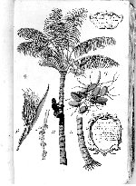

Georg Everhard Rumphius, Het Amboinsche cruyde boeck. Authentiek exemplaar. Nederlands. Handschrift op papier; 12 delen gebonden in 7 banden, waarvan alleen de eerste getoond. 368 ff., circa 430 x 270 mm. Java, circa 1693. -- (BPL 314 I)
De avonturen van Rumphius’ werk over de Ambonese flora waren dezelfde als die van zijn boek over het leven in de zee rond het eiland (zie nummer 89). Het kwam uiteindelijk via de archieven van de Compagnie in Leids bezit, evenals de reeks die aanvankelijk op Java achterbleef.
Dit eerste van de twaalf delen geeft een indruk van het imposante werk dat Rumphius leverde en dat ook nu nog een veel geraadpleegde bron is voor de natuur van de Molukken. Want de ervaring heeft geleerd dat de beschrijvingen uiterst waardevol zijn, niet in de laatste plaats omdat Rumphius in het algemeen ook aandacht besteedde aan het milieu van de flora en fauna. Hetzelfde geldt voor de illustraties, die alleen in dit exemplaar ingekleurd zijn. De afgebeelde boom is de Cocos nucifera L.
Literatuur
- J.P. Lotsy, ‘Over de in Nederland aanwezige botanische handschriften van Rumphius’, in: Rumphius gedenkboek, 1702-1902. Haarlem 1902, p. 46-58.
- H.C.D. de Wit, ‘A checklist to Rumphius’s Herbarium Amboinense’,in: Rumphius memorial volume. Ed. by H.C.D. de Wit. Baarn 1959.
| vorige pagina | top pagina |